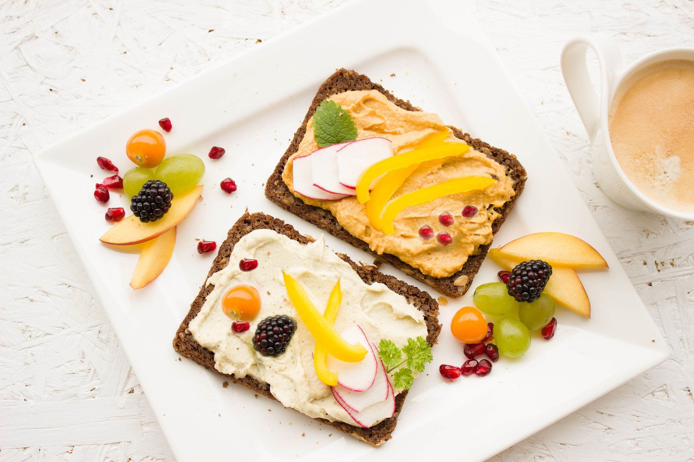
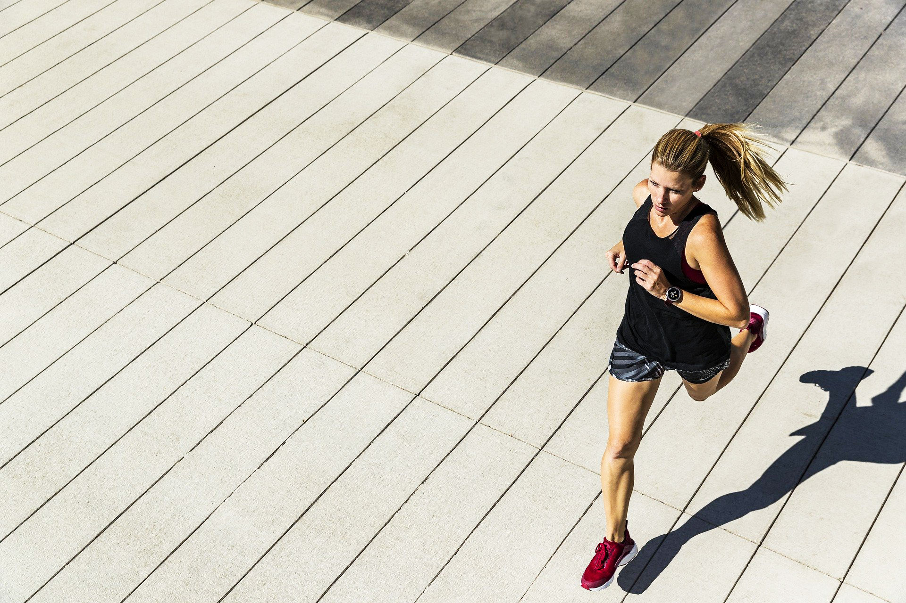

All images were exported and saved in jpg form with quality at 80% as the sixe was significantly smaller than png form.
For this image, I wanted to add some more fruit and veg to look more filling as the food looked light and
I did not want to give the impression of an unhealthy diet.
I did that by choosing the clone brush tool and choosing the area that I wanted to clone to do so.
However, the edges around the fruit were rough so I used the Erase Brush tool, reduced hardness to 0% so
I could make the edges smoother. Also, Adjustment -> colour balance and on midtones increased red to 50%
to get a warmer colour. This image was used in the contact page.
Image 1
Image 2 - size 1920px x 1280px 525.35Kb
This image was downloaded from pixabay. I wanted to improve brightness in this image and also
I wanted to make the colours look more vibrant. In Affinity photo, I used the Adjustment option and
then Brightness/Contrast. I changed from the default option to Increase Contrast and thenincreased
Brightness by 13% and Contrast by 10%. Exported this image in a jpeg form as it was significantly
smaller than the png form (3.83 Mb) with quality at 80%.
Image 3 - size 4608px x 3456px, 2.39MB
For this image, I combined two photos together (Beach image and Yoga image) to get the desired result.
Beach image: I worked on the noise in this image by choosing noise -> Denoise and I reduced luminance to 25%.
As a result, colours look more lively and also quality looks better. In order to combine the two images,
I used Then in Affinity Photo and with the selection brush, I used the small size to select the girl practicing headstand,
then I chose 'refine' to check details, then select – grow/shrink and I reduced it by 2 pixels.
Then I created a mask layer, deselected the area I had selected and copy paste the photo on the beach photo.
I corrected the edges with erase brush tool and blended the colours with mimicing the ambient light.
Furthermore, I dublicate the background layer and on the new background layer,
I chose filters,then blur and then average blur and added this layer to the main layer.
At last, I corrected the colour by using Curves in Adjustments and adjusted the colour to look warmer as this is a summer photo.
Image 4
Similar to image 3, I combined two photos (Jump image and Hive image) to get the desired image.
For the Jump photo, I used the selection brush tool and then I created a mask to refine edges and set the background as grid.
Also, for combining the colours, I mimiced the ambient light of the hive photo by using the filters option and then Blur and Average.
Image 5
This image is a photo I took of some firends playing in the pool. Lighting is really challenging in this photo
and even though I knew that the quality of this photo would be poor, I still wanted to experiment and discover how much I could imporve it.
Due to the low quality, I will not be using this image on the website.
In order to edit this image, I create a copy of the original layer. Since haze was very strong in this image,
I decided to reduce by using haze removal (filters -> Haze removal). Then I reduce distance as it created some dark shadows on the photo,
reduced strength just a little and increased exposure correction a little as the photo was still dark. Moreover, Brightness still needed correction
so I used the Lighting potion from filters and changed the light direction to expand from the top middle towards the centre of the photo.
Also, I change the Shadows/Highlights filter by increasing to 50% the Shadows strength.
Then, I increased the clarity by 50% for better details on the photo.
Finally, I adjusted the colours by filters > colours > auto colours to make colours look more lively.
Image 6
The logo was created in Adobe XD and will be used in any communication material with users/clients.